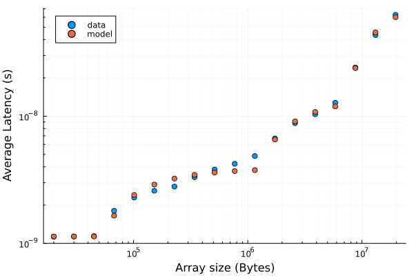

Pointer Chasing and latency
It is possible to estimate the latency associated to different cache levels and to the main memory by implementing a pathological pattern of memory access where the hardware cannot at all predict what address will be accessed before the previous address has been loaded and read.
This problem, which affects also real-life codes, is called pointer chasing and it is typical of code where objects contain references (pointers) to other objects, which contain references to other objects and so on.
We will see this with a Julia example, based on these notes.
Pointer chasing
This function will jump between positions in an array, based on addresses that are read from it:
function pointer_chasing(array_of_pointers::Vector{Int64})
k = 1
for _ in 1:size(array_of_pointers, 1)
k = array_of_pointers[k]
end
end
A possible way to create such an array so that all the locations are actually visited is:
function get_self_referential_array_random_order(array_size::Int64)
all_indices = collect(1:array_size)
single_cycle_array_visiting_order = shuffle(all_indices)
res = similar(single_cycle_array_visiting_order)
k = single_cycle_array_visiting_order[end]
for i in eachindex(single_cycle_array_visiting_order)
res[k] = single_cycle_array_visiting_order[i]
k = res[k]
end
return res
end
A quick experiment: on my laptop, hopping through a 16MB array (enough to be on main memory) in an ordered way requires 1.2ns of latency per access on average, while doing the same in a totally random order requires 69ns of latency per access on average.
A simple latency model
The average latency will be a mean of the latency associated to the different cache levels, weighted by the size of the part of the dataset in each cache level.
A small enough array will fill in the L1 cache, and the resulting latency will be “pure” from L1. For array that “spills” into L2, the latency will be a combination of L1 and L2 contributions, and so on:
function latency_model(array_size::Int64, params)
# We do not care about the side of the dram, but about its latency
# We also assume that the caches are exclusive
levels = Int((length(params) - 1) / 2)
sizes = params[1:levels]
cumsizes = cumsum(cat([0], sizes, dims=1))
latencies = params[levels+1:end]
cache_contribution = sum(latency * min(size, array_size - cumsize) / array_size
for (size, cumsize, latency)
in
zip(sizes, cumsizes, latencies) if (array_size > cumsize))
dram_contribution = if (array_size > sum(sizes))
(array_size - sum(sizes)) / array_size * latencies[end]
else
0
end
return cache_contribution + dram_contribution
end
The parameters of the model are:
the cache sizes
the latency of all the cache levels, and the main memory latency
Fitting the latency model to the measured latencies requires a some care (enough data points, sensible initial values for the parameters, sensible form for the residuals)

The output of the full julia script:
Fit results (assuming 3 cache levels + dram):
size: 54 KiB latency: 1 ns
size: 1186 KiB latency: 4 ns
size: 6034 KiB latency: 14 ns
Main memory latency: 89.08 ns
The times have been measured with @btime.
The initial values from the cache sizes sizes
(48KiB, 1.25MiB and 8 MiB)
are actually from likwid-topology,
so the deviation from the values resulting from the fit
give an idea of the systematic error in the procedure.
By fixing the cache sizes to the initial, “official” values, we get:
Fit results (assuming 3 cache levels + dram):
size: 48 KiB latency: 1 ns
size: 1282 KiB latency: 4 ns
size: 8192 KiB latency: 16 ns
Main memory latency: 116.02 ns